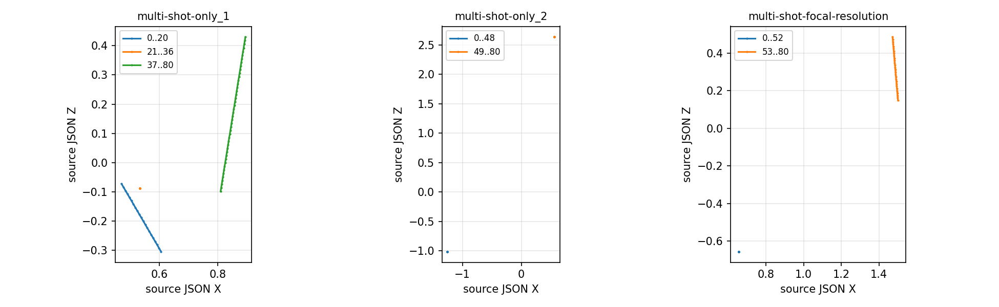

← Camera studiesReference videos and camera checks
- ReCamMaster: More Complex Trajectories is a multi-case source/result/camera montage. We used its foreground passes and camera-height changes as visual references; we did not obtain numerically matched poses for that montage.
- CameraAnything: the official camera JSON provides per-frame c2w and HFOV. Its multi-shot examples contain hard cuts. We separate continuous sections rather than importing discontinuities into our single-take generation.
- Reshoot-Anything: the public car source and elevated reshot result inform the new low-to-high tracking study. Our geometry is reconstructed independently and our path is independently authored; this is not an equal-protocol benchmark comparison.
- Track2View, ReDirector and GCD were checked for additional scene and trajectory examples. Many shown controls are elementary axis motions or angle sweeps, so they are not the main complex-path templates here.
Concrete video references
CameraAnything: continuous sections separated at cuts

Axes retain the source file's units; they are not transferred directly to our depth-normalized paths. Analysis JSON. Our viewer displays requested and recorded controls, not actual cameras recovered from the output.